Crecimiento Económico
Cambio tecnológico y sustitución laboral
Cambio tecnológico y sustitución laboral
Agenda
Implicaciones del cambio tecnológico
Sustitución laboral
Revolución Industrial
Actualidad
Sustitutos o complementos
Políticas
Implicaciones del cambio tecnológico
“En lo que respecta a la influencia del periódico sobre la mente y la moral de la gente, no puede haber ninguna duda racional de que el telégrafo ha causado un gran daño … Diez días nos lleva conocer las noticias de Europa. ¿Qué necesidad hay de tener las noticias en diez minutos? ¿Qué tan trivial y miserable es la columna telegráfica? Aquí nevó, llovió allá, un hombre mató, otro ahorcado. Incluso las notas del Washington (Post) se ha deteriorado desde la innovación, y puedo recomendar conscientemente los artículos de antes de 1844, en lugar de los de años posteriores”.
New York Times, 1858
Implicaciones del cambio tecnológico
“Tomemos, por ejemplo, la revolución que se ha producido en la industria del vidrio. Durante mucho tiempo se pensó que era imposible reemplazar la habilidad humana en su fabricación. En la actualidad, casi todos los artículos de vidrio están siendo fabricadas por máquinas y algunas son extraordinariamente eficientes. En cada tipo de botella, una máquina automática produce 41 veces más que los procesos de mano de obra, y la producción de la máquina no requiere sopladores de vidrio calificados. Una máquina hace ahora lo que 41 hombres antes ¿Qué estamos haciendo con los hombres desplazados?”
“Piense en la angustia en todo el país en 1920-21 con los bares cerrados y las calles inundadas de extranjeros, y sin trabajo en ningún lugar. Nuestro deber, como lo vimos, era cuidar lo mejor que pudiéramos para los trabajadores que ya estaban aquí, nativos o nacidos en el extranjero. La inmigración restrictiva nos permitió hacerlo, y por lo tanto resolvimos una situación extraordinariamente mala. Ahora, tal como fuimos sabios en esa época en lo que respecta a la inmigración, debemos ser sabios al evitar hoy en día la maldición del desempleo como resultado de la incesante invención de la maquinaria.”
Secretario del Trabajo James J. Davis, 1927
Implicaciones del cambio tecnológico
“La cantidad de trabajos reemplazados por máquinas más eficientes es solo una parte del problema. Lo que preocupa a muchos expertos en empleo es que la automatización puede impedir que la economía cree suficientes empleos nuevos … En toda la industria, la tendencia ha sido una mayor producción con una fuerza laboral más pequeña … Muchas de las pérdidas en empleos en fábricas han sido contrarrestadas por un aumento en las industrias de servicios o en empleos de oficina. Pero la automatización está empezando a moverse y también a eliminar los trabajos de oficina … En el pasado, las nuevas industrias contrataban a mucha más gente que las que despedían. Pero esto no es cierto para muchas de las nuevas industrias de hoy … Las nuevas industrias de hoy en día tienen comparativamente pocos empleos para los no calificados o semicalificados, la clase de trabajadores cuyos empleos están siendo eliminados por la automatización”
TIMES, 1961
Implicaciones del cambio tecnológico
Implicaciones del cambio tecnológico
Esto es el argumento actual sobre como la tecnología y la automatización que conducirá a un desempleo masivo en el futuro. Hace 50 años estábamos preocupados por este tipo de cosas, y en este momento no se tenía un desempleo masivo.
Cuando este ha existido, no se referencia al problema de la automatización.
Implicaciones del cambio tecnológico
En 1961, la relación empleo / población era de 55%, y luego aumentó de manera constante hasta 2000, cuando alcanzó un máximo del 64%.
Incluso después de la crisis de 2008, la proporción sigue siendo del 59% en la actualidad, más alta que en 1961.
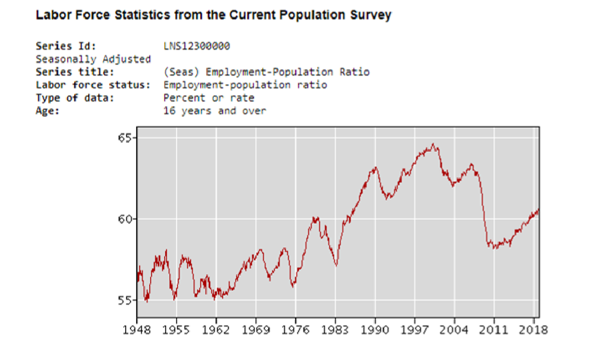
Implicaciones del cambio tecnológico
Reemplazo de trabajos
La preocupación es que la tecnología reemplazará ciertos trabajos (especialmente los que producen bienes) y que no habrá nada para que hagan estas personas. Presumiblemente saldrán completamente del mercado laboral y posiblemente necesitarán un apoyo permanente para mantener los ingresos.
Esto tratado así, es falso: la tecnología reduce la demanda de mano de obra en algunas industrias, por lo que hay menos trabajadores empleados ahí, lo que aumenta la oferta de mano de obra en todas las demás industrias.
Implicaciones del cambio tecnológico
Para que el impacto de la oferta no genere otros empleos, se debe asumir que la economía es tan inflexible que tiene una serie de puestos de trabajo fijos que se pueden cubrir. Sin embargo, los datos demuestran que esto no es así:
Entre 1950 y 2013, el mercado laboral de Estados Unidos se expandió de 28 millones a 117 millones de empleos de servicio (BLS).
Así que la economía va a encontrar algo que estas personas puedan hacer.
La pregunta es qué tipo de trabajos serán estos.
La sustitución laboral en la Revolución Industrial
“When Did Growth Begin? New Estimates of Productivity Growth in England from 1250 to 1870” (Bouscasse, Nakamura, Steinsson, 2021)
Inicios del aumento de la productividad
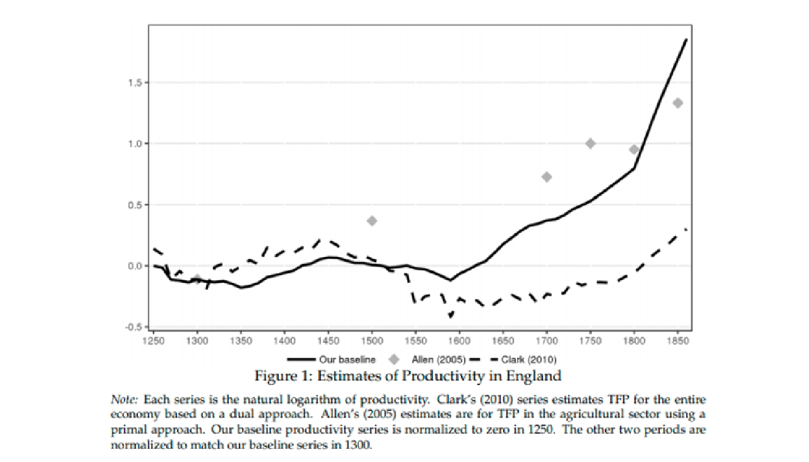
La sustitución laboral en la Revolución Industrial
“When Did Growth Begin? New Estimates of Productivity Growth in England from 1250 to 1870” (Bouscasse, Nakamura, Steinsson, 2021)
Inicios del aumento de la productividad
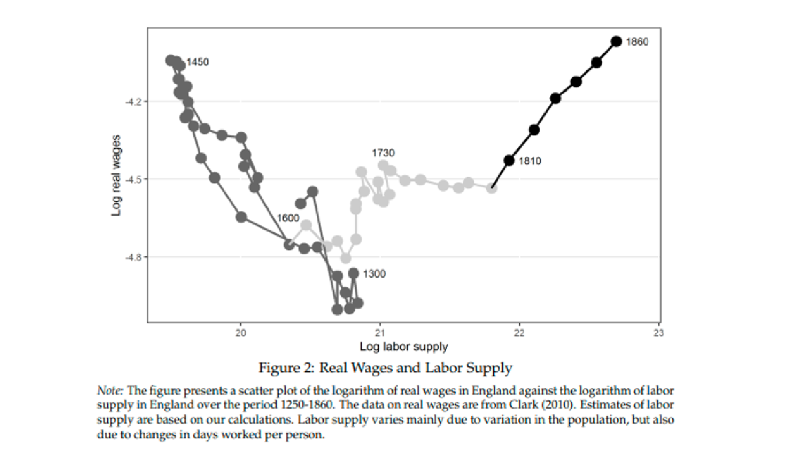
La sustitución laboral en la Revolución Industrial
“Human Capital Formation from Occupations: The ‘Deskilling Hypothesis’ Revisited” (Pleijt, Wiesdorf (PW); 2014; CGEH)
Los autores analizan la composición de habilidades de la fuerza laboral de Reino Unido desde 1550 hasta 1850. Lo hacen observando los títulos ocupacionales registrados en los registros parroquiales ingleses durante ese período, y codifican a cada trabajador observado según la habilidad asociada con su ocupación.
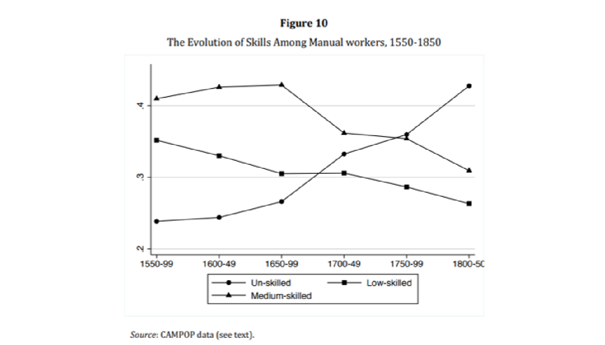
La sustitución laboral en la Revolución Industrial
“The Great Reversal in the Demand for Skill and Cognitive Tasks” (Beaudry, Green, Sand (BGS); 2013; NBER)
BGS es básicamente una actualización del paper de PW en el periodo actual.
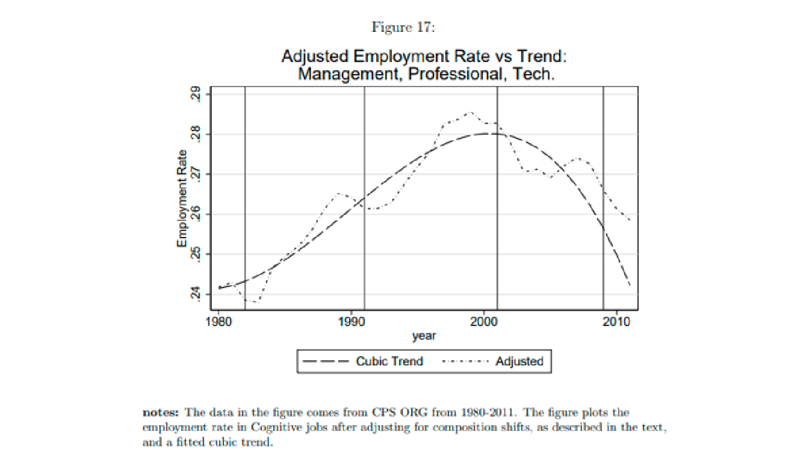
La sustitución laboral en la Revolución Industrial
“The Great Reversal in the Demand for Skill and Cognitive Tasks” (Beaudry, Green, Sand (BGS); 2013; NBER)
Concluyen que el nivel de empleo de trabajadores calificados está disminuyendo.

La sustitución laboral en la Revolución Industrial
“The Great Reversal in the Demand for Skill and Cognitive Tasks” (Beaudry, Green, Sand (BGS); 2013; NBER)
En contraste, la tendencia de los empleados de servicios y mano de obra poco calificada es positiva y, a pesar de la caída en 2008, esto no parece haber revertido la tendencia general al alza de las últimas décadas.
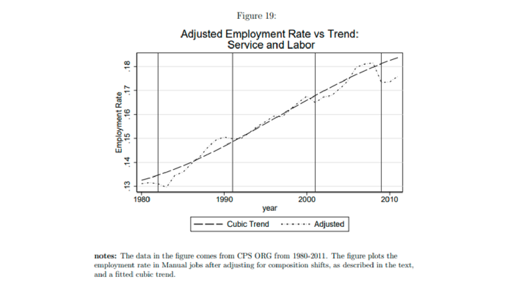
La sustitución laboral en la Revolución Industrial
“The Great Reversal in the Demand for Skill and Cognitive Tasks” (Beaudry, Green, Sand (BGS); 2013; NBER)
Una interpretación es que se formó una “nueva habilidad” en Estados Unidos desde el año 2000.
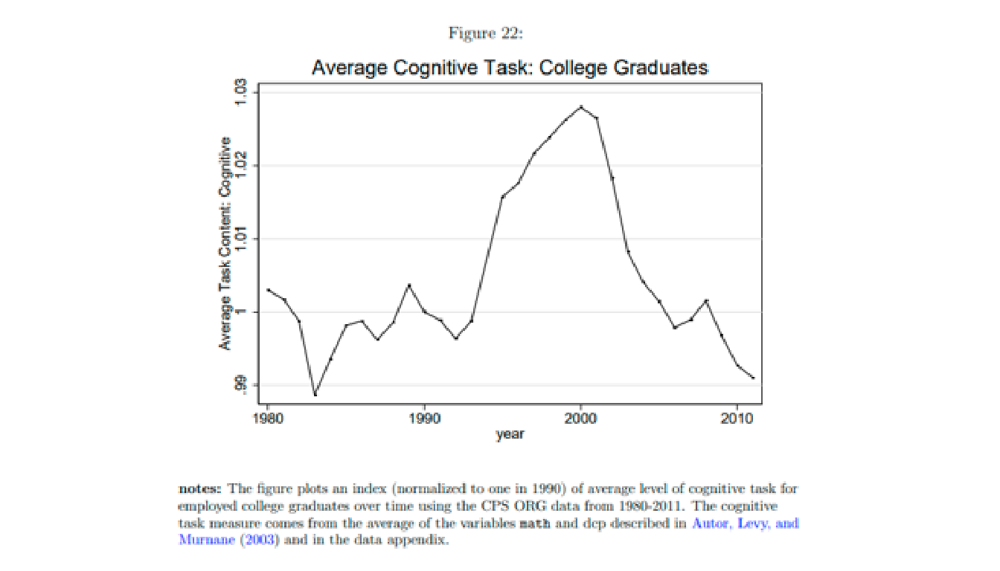
La sustitución laboral en la Revolución Industrial
“The Great Reversal in the Demand for Skill and Cognitive Tasks” (Beaudry, Green, Sand (BGS); 2013; NBER)
Una interpretación es que se formó una “nueva habilidad” en Estados Unidos desde el año 2000.
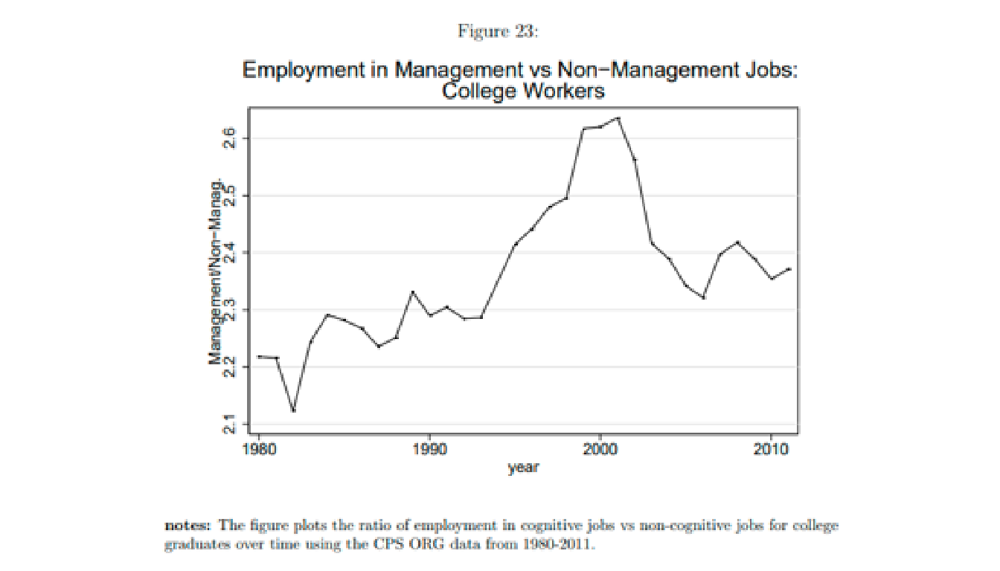
La sustitución laboral en la Revolución Industrial
“The Great Reversal in the Demand for Skill and Cognitive Tasks” (Beaudry, Green, Sand (BGS); 2013; NBER)
De acuerdo con BGS, ahora tenemos un “exceso” de trabajadores calificados graduados de universidades, que no son realmente necesarios.
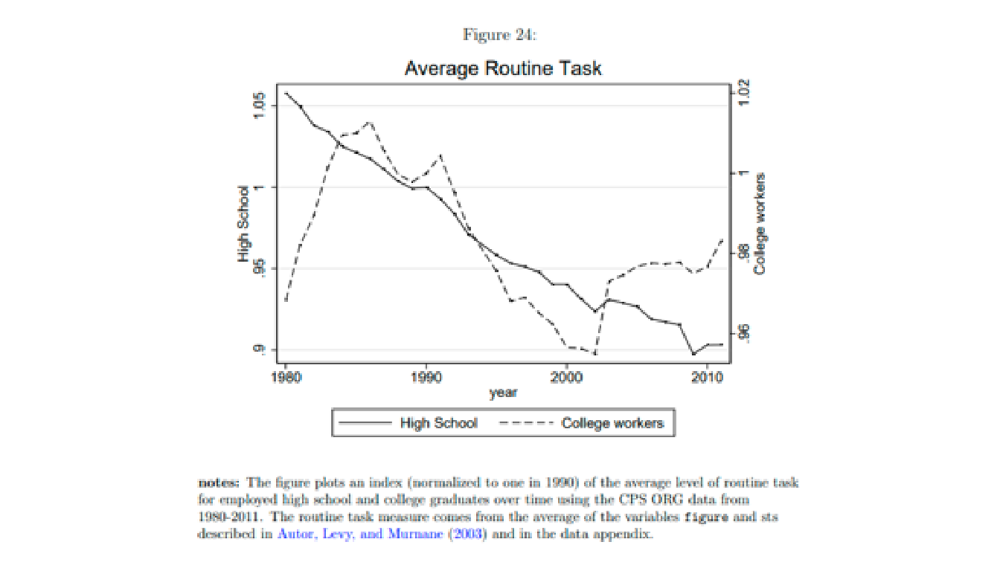
La sustitución laboral en la Revolución Industrial
“The Great Reversal in the Demand for Skill and Cognitive Tasks” (Beaudry, Green, Sand (BGS); 2013; NBER)
Las industrias están presionando al mercado laboral hacia trabajos que normalmente habrían sido para trabajadores no calificados que no tienen estudios universitarios, lo que a su vez obliga a esas personas calificadas a ocupar puestos de trabajo poco calificados en servicio o trabajo.
Cambio tecnológico: sustituto o complemento
- En Estados Unidos, los datos muestran que los salarios de los trabajadores de los percentiles 10 y 20 en los Estados Unidos se estancaron en los últimos 40 años.
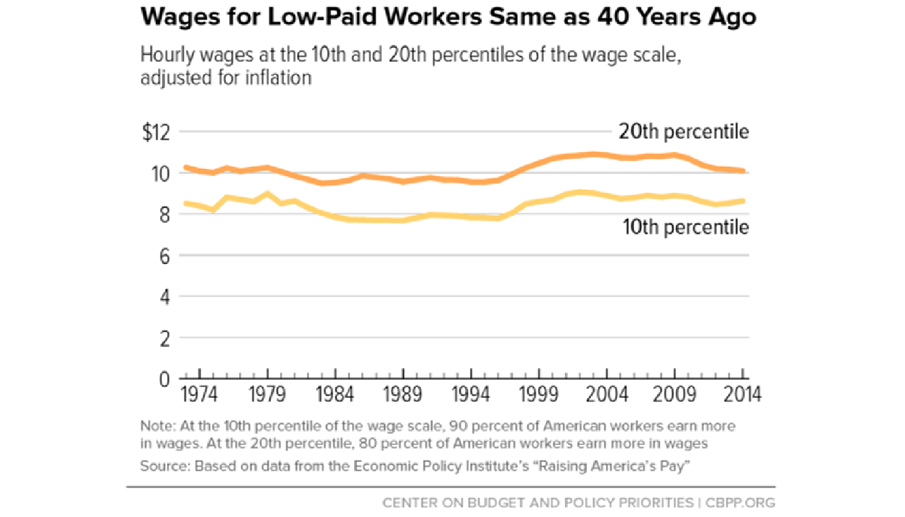
Cambio tecnológico: sustituto o complemento
“Trade, skill-biased technical change and wages in Mexican manufacturing” (Caselli, University of Oxford, 2011)
La liberalización del comercio en México generó un aumento de habilidades de los trabajadores en el sector manufacturero mexicano.
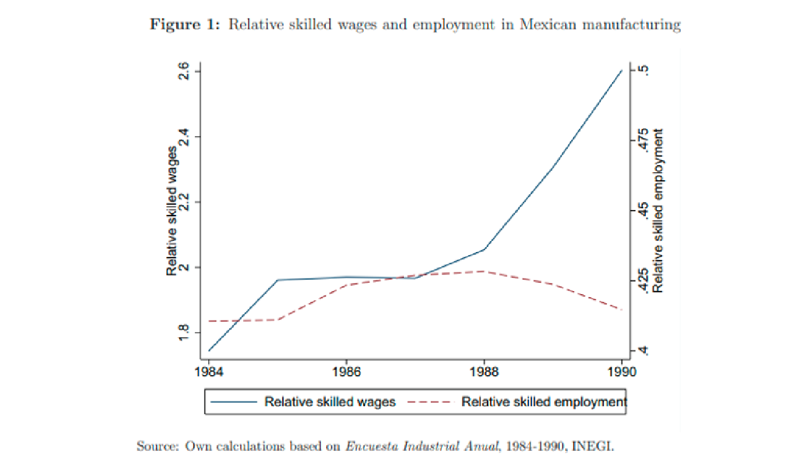
Cambio tecnológico: sustituto o complemento
“Trade, skill-biased technical change and wages in Mexican manufacturing” (Caselli, University of Oxford, 2011)
Esto refleja principalmente un aumento en los salarios reales de los trabajadores calificados.
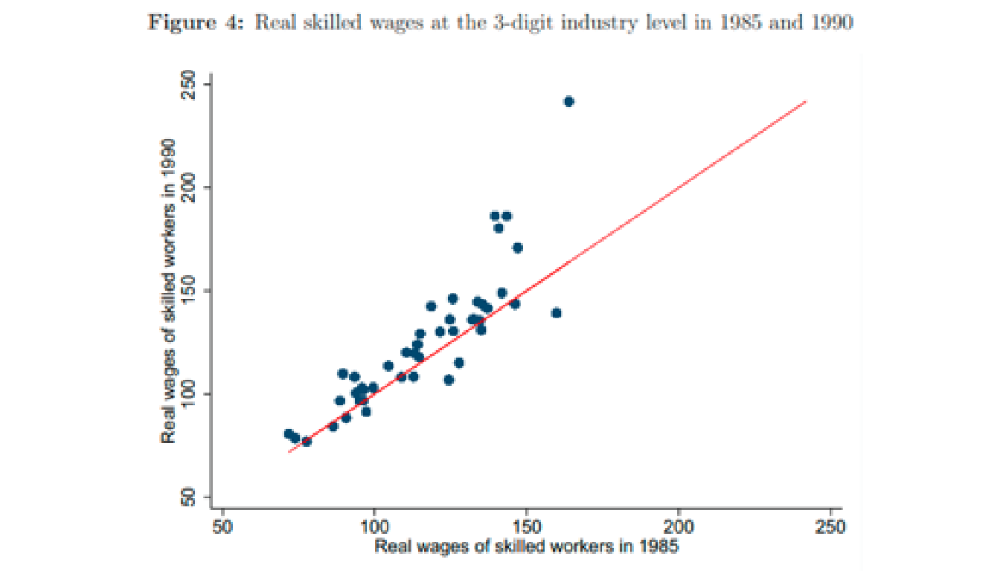
Cambio tecnológico: sustituto o complemento
“Trade, skill-biased technical change and wages in Mexican manufacturing” (Caselli, University of Oxford, 2011)
…y una caída en los salarios reales de los trabajadores no calificados.
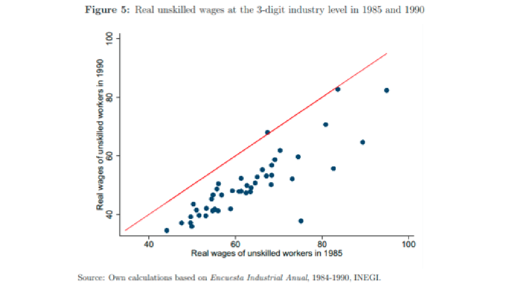
Cambio tecnológico: sustituto o complemento
“Technology and Skill Demand in Mexico” (López-Acevedo, The World Bank, 2002)
López-Acevedo investiga los efectos de la tecnología en el empleo y los salarios de trabajadores manufactureros mexicanos con diferentes habilidades utilizando datos panel en el periodo de 1992 a 1999, analizando la relación entre desarrollo tecnológico y la demanda de habilidades.
Los hallazgos apoyan la hipótesis de que el cambio tecnológico aumenta las habilidades.
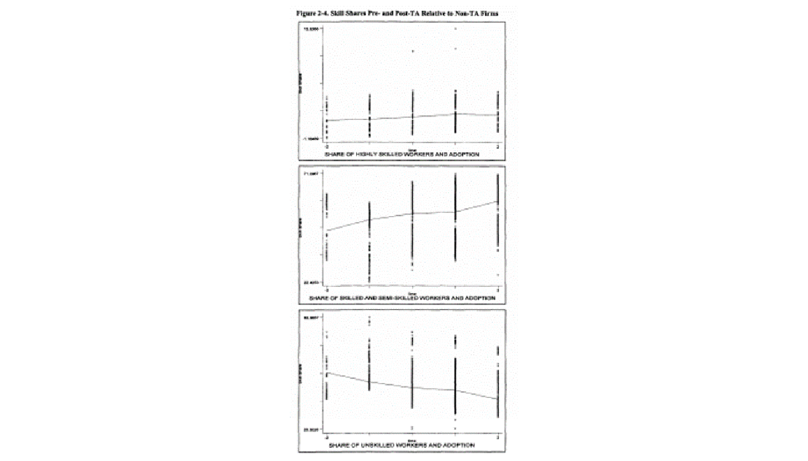
Cambio tecnológico: sustituto o complemento
“Technology and Skill Demand in Mexico” (López-Acevedo, The World Bank, 2002)
Asimismo, los salarios de los trabajadores calificados y semicalificados muestran tasas de crecimiento notablemente más altas en comparación con la tasa de crecimiento de los trabajadores poco calificados.
Los resultados muestran que la inversión en capital humano mejora las ganancias de productividad impulsadas por la tecnología.
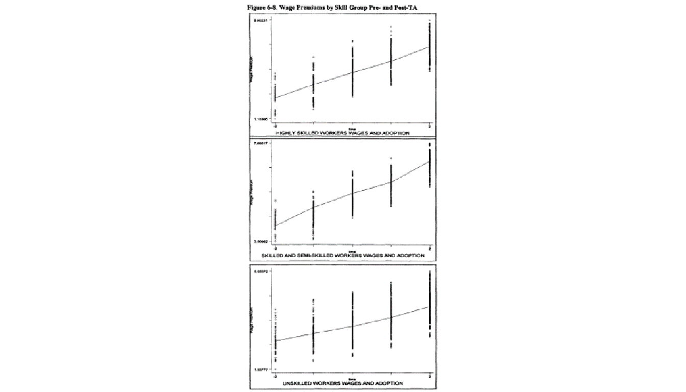
Cambio tecnológico: sustituto o complemento
“The Micro and Macro of Disappearing Routine Jobs: A Flows Approach” (Cortes, Jaimovich, Nekarda, and Siu (CJNS); 2014; NBER)
CJNS investigan los flujos en el trabajo “rutinario” (aquellas actividades que pueden realizarse siguiendo un conjunto bien definido de procedimientos) frente al no rutinario. En la década de 1980, alrededor de 1/3 de los trabajadores estadounidenses tenían un trabajo rutinario, y actualmente este número es solo de 1/4.
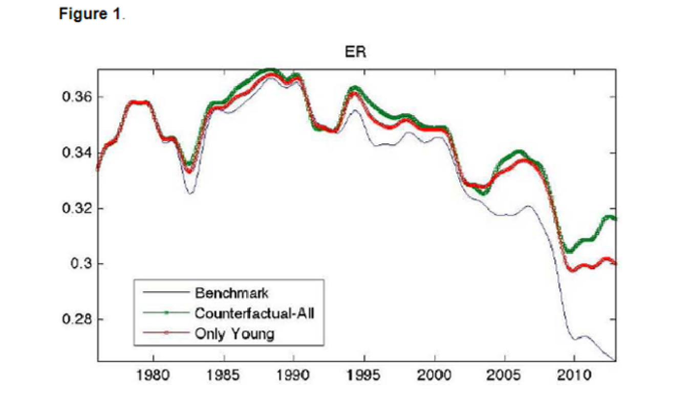
Cambio tecnológico: sustituto o complemento
“The Micro and Macro of Disappearing Routine Jobs: A Flows Approach” (Cortes, Jaimovich, Nekarda, and Siu (CJNS); 2014; NBER)
Como es de esperarse, las personas con más educación pudieron adaptarse mejor a esto.
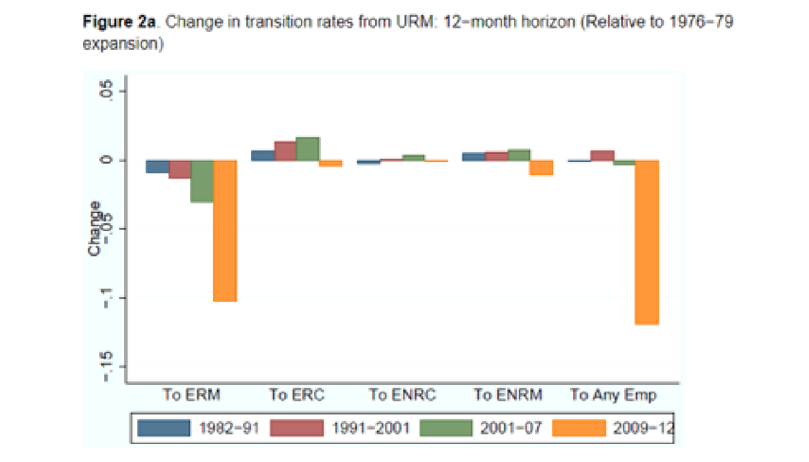
Cambio tecnológico: sustituto o complemento
“The Micro and Macro of Disappearing Routine Jobs: A Flows Approach” (Cortes, Jaimovich, Nekarda, and Siu (CJNS); 2014; NBER)
Como es de esperarse, las personas con más educación pudieron adaptarse mejor a esto.
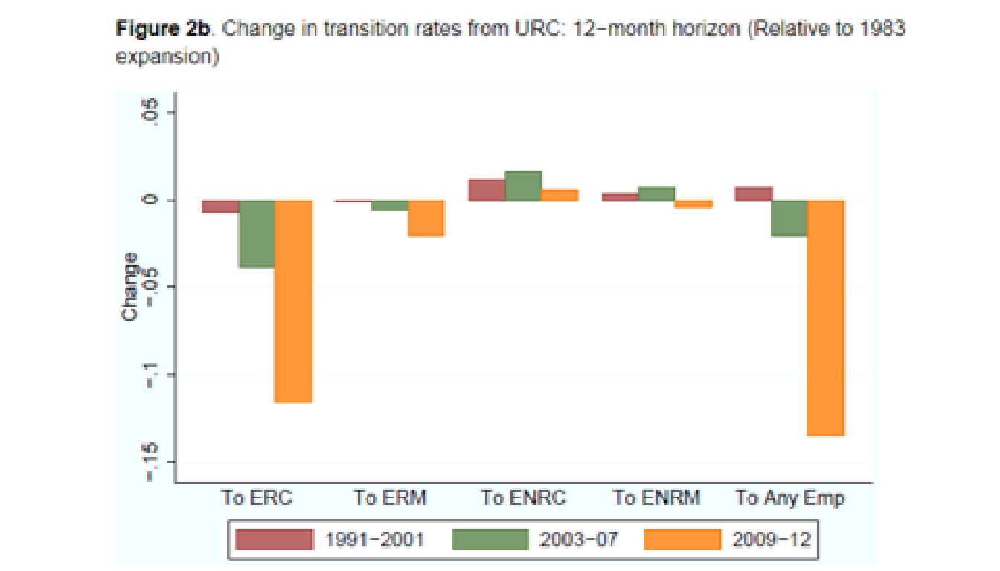
Cambio tecnológico: sustituto o complemento
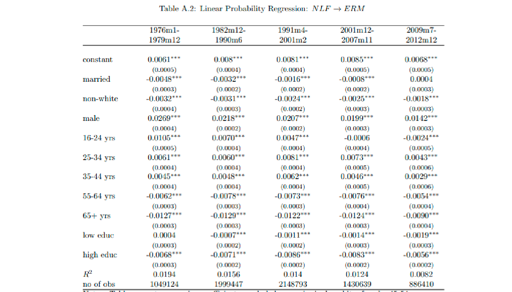
Cambio tecnológico: sustituto o complemento
“Job Polarization and Job Recoveries” (Jaimovich y Siu, 2018)
Jaimovich y Siu (2012) estudian el comportamiento de la recuperación laboral en Estados Unidos después de las 6 recesiones importantes ocurridas entre el periodo 1970-2009. Las siguientes gráficas reflejan la distribución del empleo agregado antes y después de cada recesión (en meses):
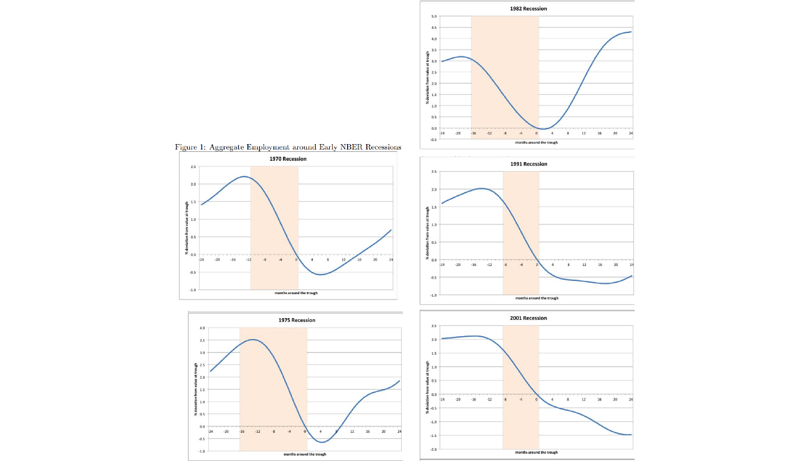
Cambio tecnológico: sustituto o complemento
“Job Polarization and Job Recoveries” (Jaimovich y Siu, 2018)
Jaimovich y Siu (2012) estudian el comportamiento de la recuperación laboral en Estados Unidos después de las 6 recesiones importantes ocurridas entre el periodo 1970-2009. Las siguientes gráficas reflejan la distribución del empleo agregado antes y después de cada recesión (en meses):
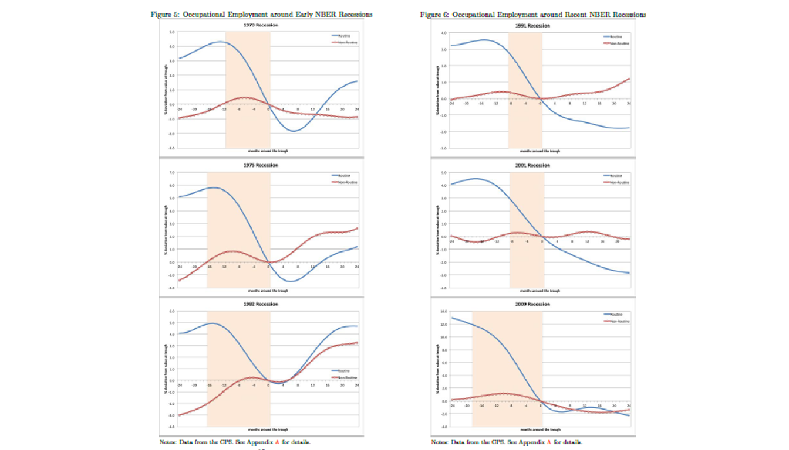
Cambio tecnológico: sustituto o complemento
“Robots are our saviours, not the enemy” (Thiel; 2014; FT)
Thiel utiliza la combinación de máquinas y trabajadores en Paypal para detectar fraudes como el ejemplo de cómo las máquinas más inteligentes beneficiarán a los trabajadores.
Una de las respuestas viene por parte de Brad DeLong: si los trabajadores se benefician no depende de la productividad promedio de ese trabajador, sino de la productividad del trabajador marginal que no está empleado.
Es decir, si puedo ser reemplazado en Paypal por un trabajador desempleado que no tiene otras opciones, entonces mi propio salario será bajo, independientemente de cuán productivo sea. Al reemplazar a los trabajadores en algunos trabajos, las máquinas aumentan la oferta de trabajadores en los trabajos restantes, lo que reduce los salarios.
Para mantener los salarios altos, tendremos que aumentar la demanda de habilidades específicas para los trabajadores. ¿Que habilidades? DeLong enlista: persuasión, motivación e innovación como cosas que se dejarán para que los trabajadores realicen.
Cambio tecnológico: sustituto o complemento
“Polanyi’s Paradox and the Shape of Employment Growth” (Autor; 2014; NBEC)
El paper toma una posición de complementariedad entre las máquinas y los trabajadores.
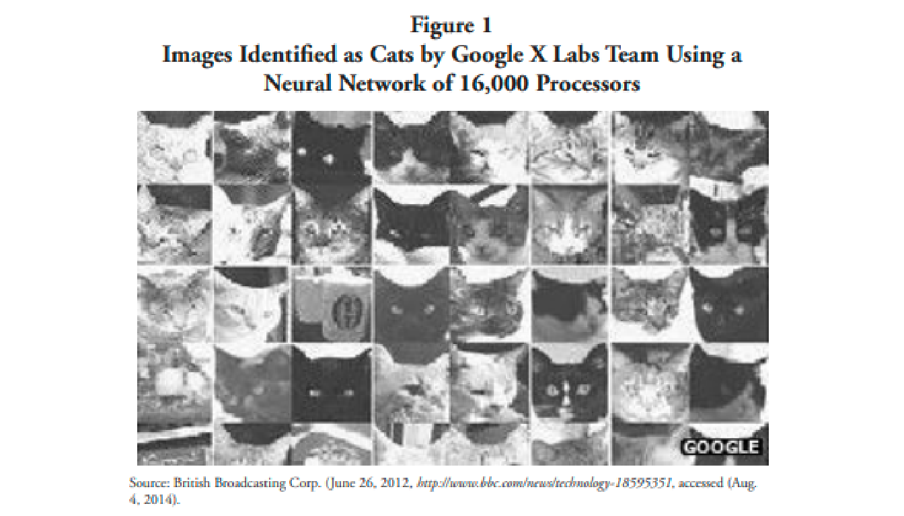
Cambio tecnológico: sustituto o complemento
“Polanyi’s Paradox and the Shape of Employment Growth” (Autor; 2014; NBEC)
Gran parte del optimismo de Autor proviene de lo que él llama “la paradoja de Polyani“ que esencialmente dice: las personas somos incapaces de explicar por completo lo que sabemos, por lo que no podemos programar una máquina para hacerlo.
Por lo tanto, pone un límite de las máquinas pues no tienen conocimiento tácito. Todo debe especificarse con precisión para que funcionen. Mientras haya tareas como esa, los robots no pueden reemplazar a los trabajadores, y requerirá que estos, junto con las máquinas, realicen juntos el trabajo.
Cambio tecnológico: sustituto o complemento
“Polanyi’s Paradox and the Shape of Employment Growth” (Autor; 2014; NBEC)
Sin embargo, el salario de esos trabajadores aún podría caer porque las mejores máquinas podrían hacer que cualquier persona pudiera trabajar en ese lugar (por ejemplo, el sector de construcción), y el producto marginal de cualquier trabajador es muy bajo.
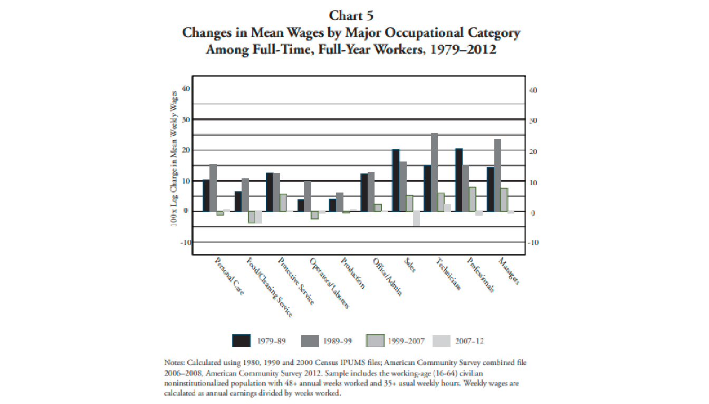
Cambio tecnológico: sustituto o complemento
“Robots Are Us: Some Economics of Human Replacement” (Benzell, Kotlikoff, LaGarda, y Sachs (BKLS); 2018; NBEC)
Intentan proporcionar un modelo básico de crecimiento económico que explique la capacidad de las máquinas para reemplazar a los trabajadores humanos hasta el momento de hacerlos “obsoletos”.
Desarrollan un modelo OLG de dos períodos que admite que las máquinas inteligentes pueden producir miseria o prosperidad económica. Predice firmemente tres cosas:
- Una disminución a largo plazo de la participación de la mano de obra en los ingresos (entre los países de la OCDE)
- Booms tecnológicos seguidos por los baches tecnológicos
- Una creciente dependencia de la producción actual en previa inversión de software.
Cambio tecnológico: sustituto o complemento
“Robots Are Us: Some Economics of Human Replacement” (Benzell, Kotlikoff, LaGarda, y Sachs (BKLS); 2018; NBEC)
El “crecimiento empobrecedor” es más probable cuanto menor es la propensión a ahorrar y menor la elasticidad de sustitución del capital por tecnología. Si la tecnología es buena para reemplazar el trabajo, se pueden dar estas condiciones.
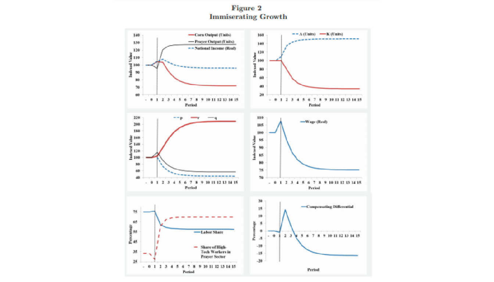
Cambio tecnológico: sustituto o complemento
“Robots Are Us: Some Economics of Human Replacement” (Benzell, Kotlikoff, LaGarda, y Sachs (BKLS); 2018; NBEC)
El “crecimiento empobrecedor” es más probable cuanto menor es la propensión a ahorrar y menor la elasticidad de sustitución del capital por tecnología. Si la tecnología es buena para reemplazar el trabajo, se pueden dar estas condiciones.
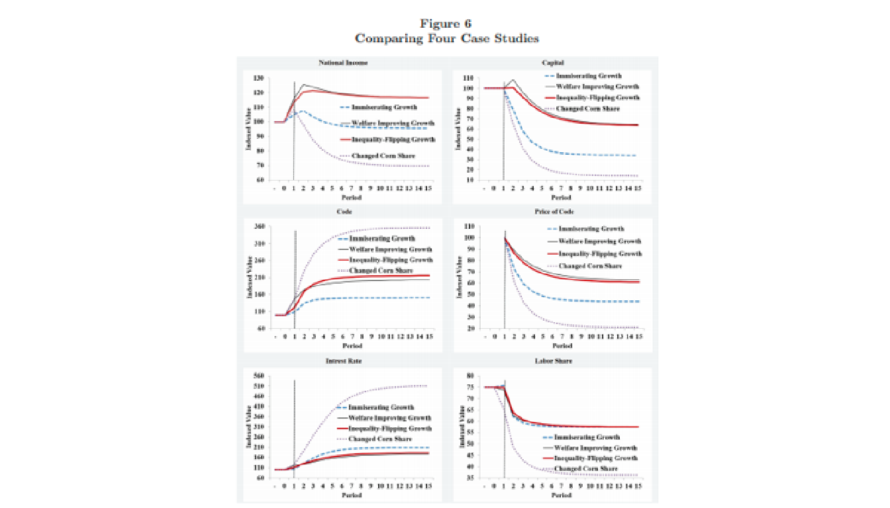
Cambio tecnológico: sustituto o complemento
“Review trends” (Greenstone, Looney; Milken Institute, 2011)
Para personas sin educación superior en Estados Unidos, el cambio tecnológico no parece tenido los beneficios de los demás sectores:
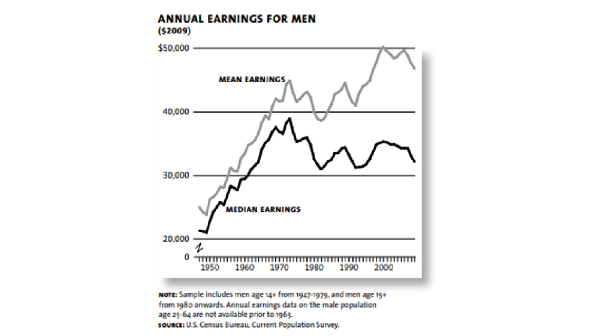
Cambio tecnológico: sustituto o complemento
“Review trends” (Greenstone, Looney; Milken Institute, 2011)
Para personas sin educación superior en Estados Unidos, el cambio tecnológico no parece tenido los beneficios de los demás sectores:
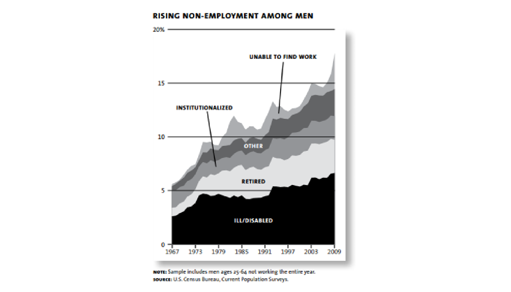
Políticas
En vez de preocuparse por el desplazamiento de los trabajadores por el cambio tecnológico, los diseñadores de políticas públicas y analistas deberían de preocuparse por mejorar el mercado laboral complementándolo con la nueva tecnología:
Calidad de los empleos: McDonalds, tiendas minoristas, etc, estos son los trabajos que la tecnología debe reemplazar para que el mercado busque ocupar a estas personas aprovechando el talento humano.
En específico, en el sector manufacturero los empleos están siendo reemplazados por la tecnología. Probablemente, las máquinas produzcan todo en un futuro.
Políticas
Por ello:
Una opción es suavizar la transición para las personas desplazadas y ayudarlas a pasar a nuevas industrias: esto implicaría discusiones sobre apoyo para capacitación y educación, no el evitar que una tecnología se incorpore a la industria.
Si el objetivo es apoyar a los trabajadores afectados por la presión salarial a la baja a medida que disminuye la demanda de mano de obra, entonces es mejor trabajar para revertir la pérdida del poder de negociación de los trabajadores: por ejemplo, aumentar los salarios mínimos o sindicalizar a los trabajadores.
Políticas
Las máquinas podrían reemplazar a los trabajadores en la producción y esto llevará al salario por debajo de ese requisito de subsistencia. Esto implicaría que ninguna empresa contratará trabajadores con el salario de subsistencia o las personas que trabajan no cumplirán con la subsistencia.
El argumento ignora el impacto de las máquinas en el precio de ese requisito de subsistencia: también reducen el precio de los bienes.
No es necesario ni obvio que los salarios reales deban caer a causa de las máquinas: los datos dicen que, a pesar de todos los cambios tecnológicos, los salarios reales han aumentado a medida que los costos más bajos superan la presión a la baja sobre los salarios.
Políticas
La concentración de riqueza sería un problema con o sin aumento tecnológico. La preocupación aquí es que, dado que los ricos serán los únicos capaces de construir los robots, fabricar de robots, controlarán completamente la producción de bienes y la demanda de mano de obra.
- Ese no es un problema que surja con los robots, ese es un problema que surge con la agricultura hace 10 mil años.
Políticas
La pregunta de qué sucede cuando las máquinas abundan tiene más que ver sobre cómo nos adaptamos a la tecnología disruptiva. Por ejemplo, la introducción del arado en el siglo XIII:
El análisis de la introducción de una nueva tecnología incorporada en bienes de capital es similar a las preocupaciones con respecto al aumento tecnológico: con el capital de solo unos pocos, aquellos sin capital se vuelven dependientes de los ricos y tienen su nivel de vida reducido.
La innovación favorece a aquellos con las habilidades para trabajar con la nueva tecnología.
La evidencia sugiere que quien posea la tecnología o el capital asociado con ella la usará como apalancamiento sobre aquellos que no la tienen, como siempre.
Sin embargo, es solo un ejemplo de cómo los mismos problemas con la innovación, la tecnología y el desplazamiento han ocurrido siempre.
Políticas
Cualquier empleo puede ser bueno si el trabajador y el empleador pueden coordinar un buen equilibrio.
- A medida que la tecnología sigue desplazando a los trabajadores, las políticas públicas deben de enfocarse en conseguir el equilibrio en los sectores de una industria (alto salario, alto beneficio, alto esfuerzo, baja rotación) en lugar de preocuparse por cosas como los días perdidos de los trabajadores o la presunción de que, literalmente, se quedarán sin cosas que hacercapital se vuelven dependientes de los ricos y tienen su nivel de vida reducido.
Políticas
Políticas públicas específicas:
Formación. Dotar a las personas con habilidades que les permitan pasar a trabajos que son más difíciles de reemplazar, o al menos seguir avanzando en estos los trabajos antes de que los robots los reemplacen.
Redistribución. Cobrar impuestos a los propietarios adinerados de tecnología. Difunde los beneficios de tener robots alrededor de todos.
Mejores salarios a los menos calificados.